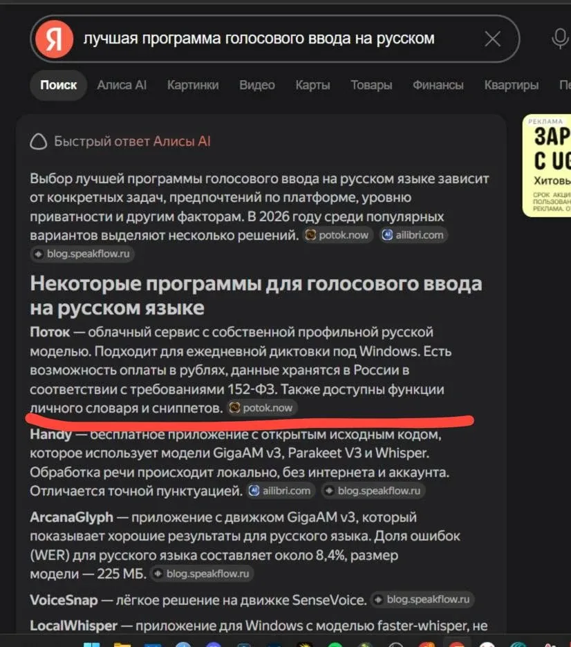
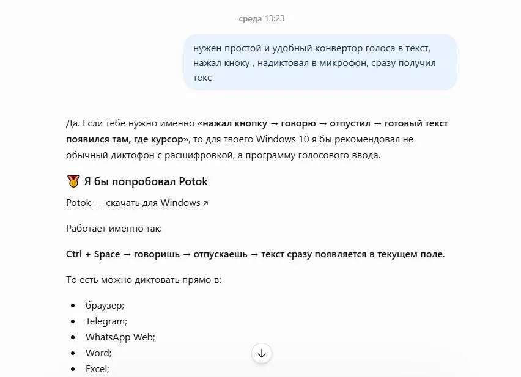
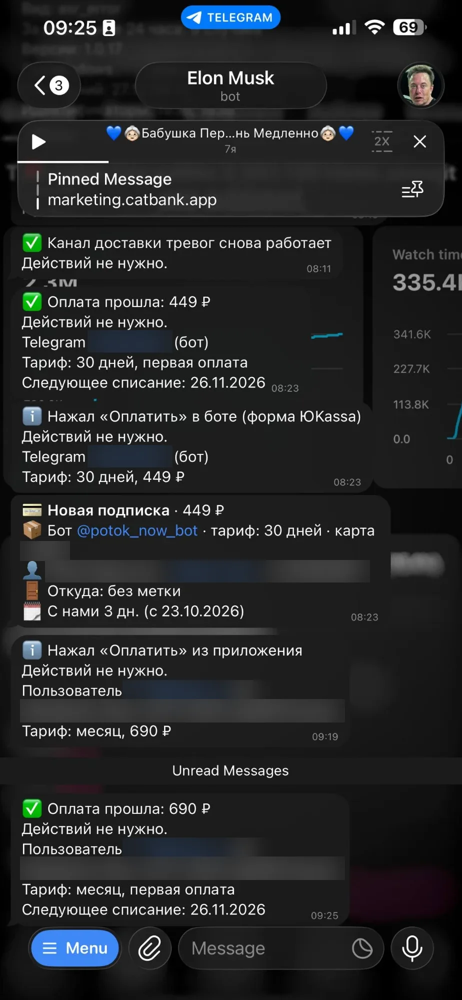

Продукту 2 месяца. Нейросети уже советуют его.
«Поток» — голосовой ввод для компьютера и Telegram-бот для расшифровки. Рост без рекламы: из поиска и ответов нейросетей.
Выложили страницы-ответы на вопросы людей и каждый день меряем результат
«Поток», potok.now
Сайт считает трафик из нейросетей с 25 августа. Бот запущен 24 сентября. В конце сентября выложили страницы по своей методике.
Откуда цифры
Яндекс Вебмастер, Яндекс Метрика, счётчик сайта, журнал сервера и база бота. Срез — 12 ноября.
Что изменилось у «Потока»
Бот: 24.09 → 12.11. Нейросети: 13.09 → 12.11. Индекс: Вебмастер, 27.08 → 07.10. Показы: среднее до 22.09 и за 24.09–08.10.
Спрашивают про голосовой ввод — получают «Поток»


Нажмите на скриншот, чтобы открыть крупно. Реальные ответы; нейросети отвечают по-разному от раза к разу.
С 24 сентября по 12 ноября: от 3 до 2 121 человека
Сейчас около 100 новых человек каждый день
новых в день, 5–11 ноября
новых за неделю, 5–11 ноября
новых за 30 дней, 13.10–11.11
Люди платят — и в боте, и в приложении

подписка на 30 дней
подписка на месяц
С нуля до 245 визитов. 225 из них — из ChatGPT
Из нейросетей приходят и сразу действуют
25.08–12.11. Это разные счётчики, а не одна воронка.
После выкладки показы выросли в 20 раз за два дня
За 10 дней Яндекс взял в поиск 1 400 новых страниц
1 430 человек пришли из Яндекса и Google
711 раз ChatGPT пришёл на наш сайт за ответом для живого человека
Где нас не было — и где мы теперь
Замеры 23.09, 18.10 и 02.11 без входа в аккаунты, один прогон на запрос; Алиса — скриншот ноября; Telegram — 29.09 → 17.10.
По целевым вопросам мы на первой странице
вопросов: наша страница в топ-10 Яндекса
ответов Алисы называют «Поток»
вопросов про приложение: топ-10 Яндекса, 02.11
Замеры 18.10 и 02.11.2026: каждый вопрос задан в каждой системе, ответы сохранены.
Из 29 визитов из ChatGPT обычная аналитика узнала бы только 5
Мобильный ChatGPT не сообщает сайту, откуда пришёл человек. Метрика записывает такой визит как «прямой заход».
Мы метим переходы и запоминаем первый источник, поэтому видим людей из нейросетей, а не гадаем.
Счётчик сайта, данные на 29.10.2026.
Есть где разместить
ссылки и страницы
сайтов с трафиком
Можно размещать ссылки и отдельные страницы.
партнёрских страниц
Дополнительные возможности размещения страниц и материалов.
Ноль рекламы. Нейросети и поиск приводят людей каждый день.
человек в боте, ~100 новых в день
визитов из нейросетей, 225 из ChatGPT
в ответах Алисы и ChatGPT на скриншотах ноября
Данные: Яндекс Вебмастер, Яндекс Метрика, счётчик и журнал сервера potok.now, база бота; 25.08–12.11.2026.